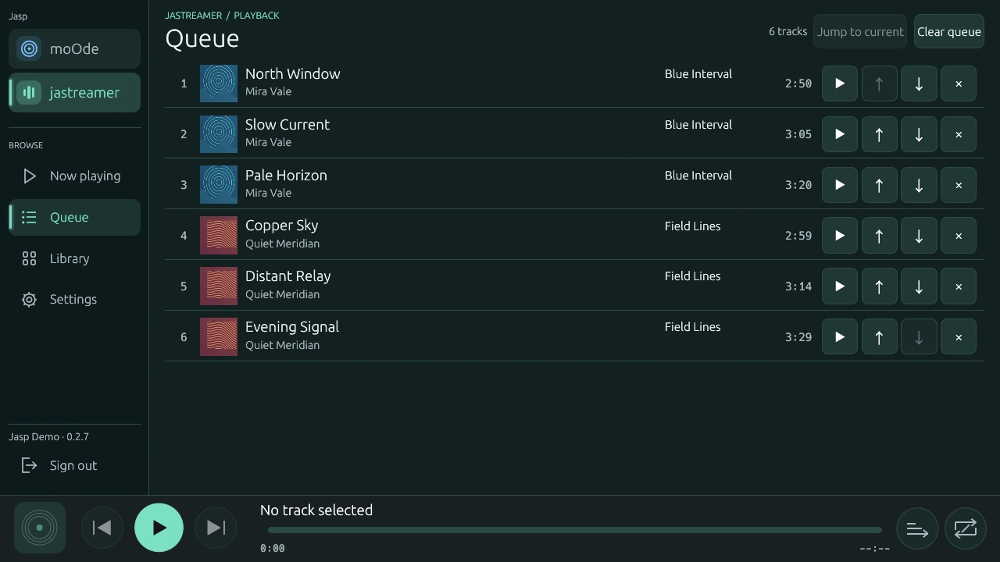

JASTREAMER CLIENT · RASPBERRY PI
Raspberry Pi용
jastreamer 플레이어
Jasp는 Raspberry Pi용 네이티브 jastreamer 음악 플레이어입니다. 기존 서버에 연결해 터치로 라이브러리를 탐색하고 대기열을 관리하세요. 음악은 Pi에 연결된 USB DAC으로 재생합니다.
라이브러리와 대기열


설치 전 확인할 사항
- 서버와 재생기
- jastreamer Server가 라이브러리와 대기열을 관리합니다. Jasp는 서버에 연결하는 재생기이며 서버를 대신하지 않습니다.
- 로컬 USB 오디오
- USB DAC을 Pi에 연결하세요. 네트워크 출력은 jastreamer 웹 UI에서 설정합니다. 지원 오디오 형식은 설치 안내에서 확인하세요.
- 선택형 moOde UI
- moOde가 설치된 Pi에서는 로컬 웹 플레이어 화면만 Jasp로 대신할 수 있습니다. 기존 moOde 백엔드, MPD, 라이브러리는 그대로 사용합니다.